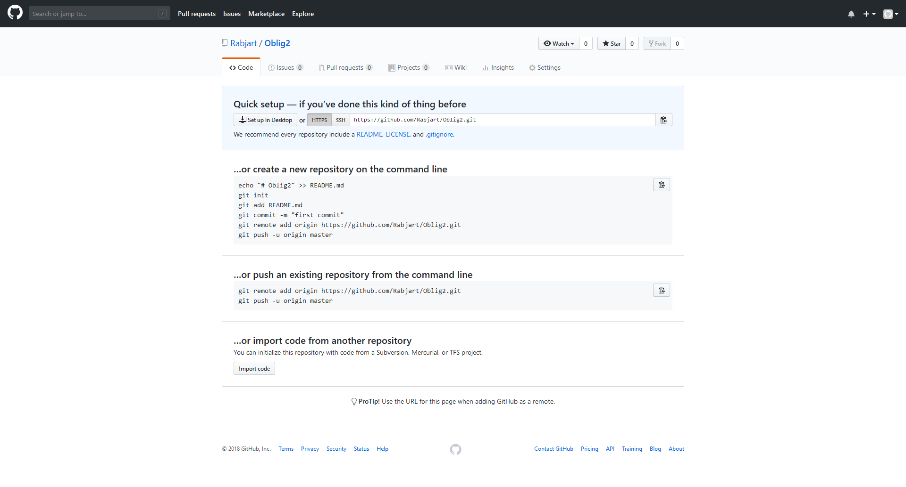

Hva og hvorfor GIT?

Hva er GIT?
Git er et versjonshåndteringssystem som lar oss gjøre endringer av filer når man samarbeider (VCS). De bruker også et versjonshåndteringssystem, hvor brukerne speiler hele repositoryet istedet for å hente ut nye filer gang på gang (DVCS).
Hvorfor GIT?
Raskt: Henter filer og prosjekter raskt pga. alt er lokalt.
Community: Veldig lett for mange utviklere å samarbeide på samme prosjekt når man har repositoryet åpent. Folk utenifra kan også komme å se på koden, og hjelpe dersom de er flinkere.
Det finnes også noen webtjenester som tar seg av å hoste repositoryer som f.eks. Gitlab, Bitbucket, Github osv.
GITHUB
Kort oppsummering
GitHub er selve programmet som man jobber på. Jeg syns GitHub virker bra, selv om ikke jeg kan si så mye om det fordi jeg ikke er helt kjent med det enda. Kilden jeg har brukt er: https://www.uio.no/studier/emner/matnat/ifi/IN2001/v18/forelesninger/in2001.2018.02.06.git_intro.pdf: